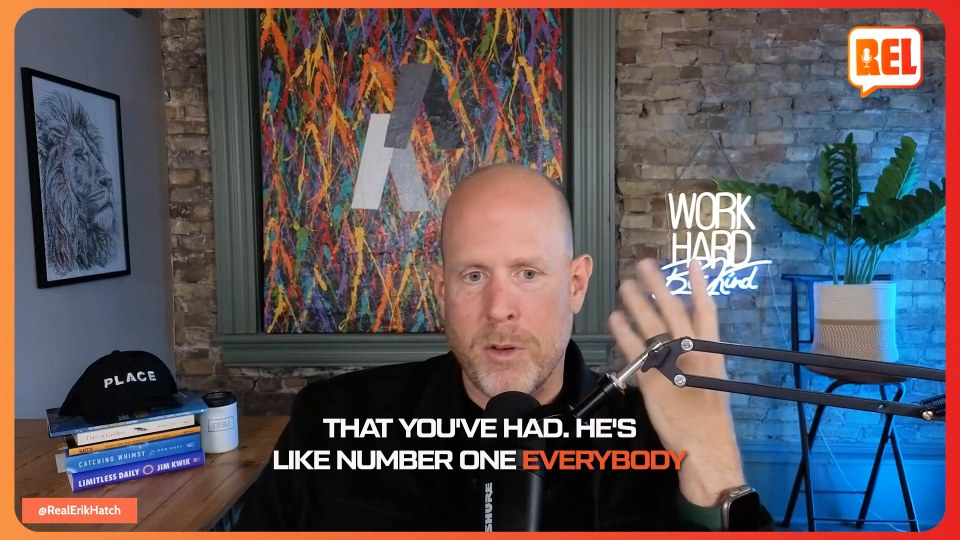

Sampled from 12 frames of the clip (k-means in Lab over the vertical-crop area), plus the in-frame brand and practical lights.

Source at 1:40. Warm grey brick and wall, a black shirt, warm skin, the REL brand orange (top right) and the blue practical light (right).
Measured in the footage
#0C0D0FShirt / shadows · 10%
#605C59Brick / wall · 18%
#787471Light brick · 10%
#B98976Skin mid · 13%
#CDA7A2Skin highlight · 11%
#9C6753Skin shadow / beard · 9%
#F05B33REL brand orange (logo, his captions)
#2174BCBlue practical light / neon
#332B2BWarm deep shadow · 10%
A · Signal orange + blueprint blue RECOMMENDED
The accent is his own brand orange, so the edit feels like Real Estate Live. Blue is the room's second light and its complement: it keeps the warm skin tones reading warm, and it makes the "blueprint" scenes literally blueprint-blue. Orange marks the one important word; blue stays in the background and diagrams.
#0E0C0BInk / base
#2A2523Surface / cards
#F7F2ECText (warm white)
#FF6B3DAccent: keywords
#2F7FD6Blueprint lines
#0D1B2EBlueprint ground
the leader has
ego
transformed into a
blueprint
Negative words ("not") switch to crimson #FF3B4E, so they stay distinct from the orange accent.
B · Warm amber on charcoal (v1)
The palette used in the first render. It's soft, premium and tonal: amber sits next to the skin and the warm wall, so it never fights the footage. But it's less distinctive. It's not his brand colour, and with no cool counterpart the whole frame stays one temperature.